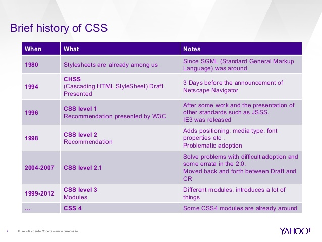

CSS is used to define styles for your web pages, including the design, layout and variations in display for different devices and screen sizes.
HTML was NEVER intended to contain tags for formatting a web page!
HTML was created to describe the content of a web page, like:
<h1>This is a heading</h1>
<p>This is a paragraph.</p>
When tags like <font>, and color attributes were added to the HTML 3.2 specification, it started a nightmare for web developers. Development of large websites, where fonts and color information were added to every single page, became a long and expensive process.
To solve this problem, the World Wide Web Consortium (W3C) created CSS.
CSS removed the style formatting from the HTML page!
The style definitions are normally saved in external .css files.
With an external stylesheet file, you can change the look of an entire website by changing just one file!
CSS was first proposed by Håkon Wium Lie on October 10, 1994. At the time, Lie was working with Tim Berners-Lee at CERN. Several other style sheet languages for the web were proposed around the same time, and discussions on public mailing lists and inside World Wide Web Consortium resulted in the first W3C CSS Recommendation (CSS1) being released in 1996. In particular, Bert Bos' proposal was influential; he became co-author of CSS1 and is regarded as co-creator of CSS.
